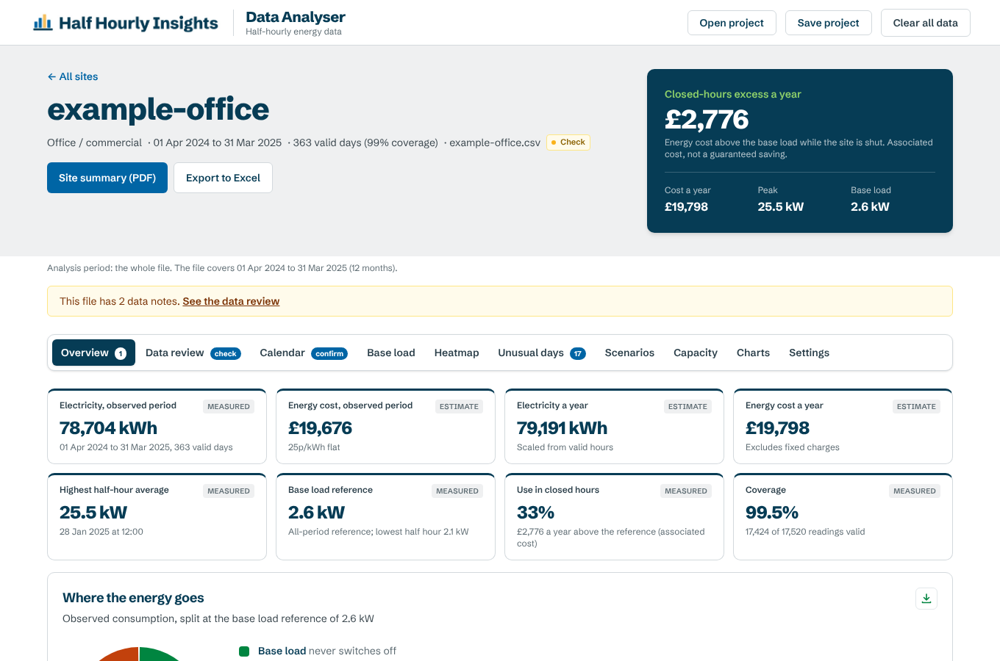
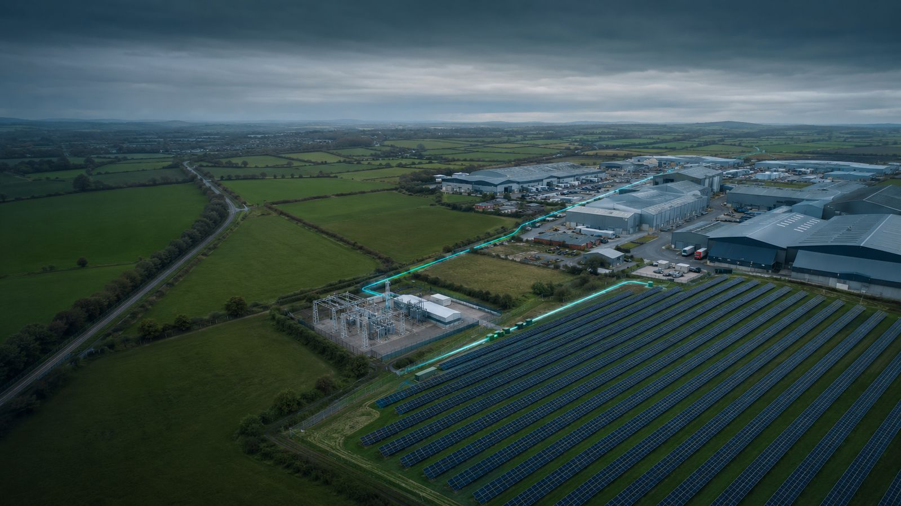

For UK businesses and public sector sites with half-hourly (HH) electricity data
Where is your business's electricity going?
Load the half-hourly readings from your business electricity meters. Within a minute you'll see how much your buildings use while they're closed, what never switches off, how close you get to your supply limit, and what each of these costs you.
Free, with no sign-up. Not sure whether you have half-hourly data? Here's how to check.
This site is for business and public sector meters only. It isn't designed for household electricity.
Start with your HH meter file
An Excel or CSV file for each meter. All the common supplier layouts work.
Analyse my dataNo data to hand? See a sample report, or download our example file and load it into the analyser.
What half-hourly data shows
Your bill gives one total for the month. Half-hourly data records your use every 30 minutes, 48 readings a day, so you can see when electricity is used and spot use that shouldn't be happening.
Use while closed
Electricity used when the building should be shut, over and above what always runs. It's often the cheapest saving to make, because it can usually be fixed by changing timers and control settings.
Base load
The minimum your building uses at all times, including overnight and at weekends. Because it runs all year, even a small reduction makes a noticeable saving.
Peaks and supply capacity
Your busiest half hours compared with the maximum your electricity connection allows, and how much room is left for heat pumps or EV charging.
Unusual days
Days that don't follow the normal pattern, and lasting changes that suggest something was left on, or that a fix has worked.
Weekends and bank holidays
Days when the site should be quiet but isn't, checked against the opening hours you enter.
Savings estimates
What you could save by cutting use while closed or reducing peaks. Where two savings overlap, they're only counted once.
Your data stays on your computer
The analyser does all its work inside your web browser. Your meter files are read on your own computer and are never sent to us or anyone else.
Nothing uploaded
No server is involved in the analysis. Once the page has loaded, you can disconnect from the internet and carry on working.
No account
You don't need to sign up or give an email address, and the site uses no tracking cookies.
You keep the results
Reports, spreadsheets and project files are saved to your computer. Save a project to come back to it later.
What you get for each site
Each site opens with its three most costly issues to investigate, and a rating for how reliable the evidence is. Every figure is labelled as measured or estimated.
- PDF reports for each site and for your whole estate, plus Excel files for your own analysis
- A heatmap showing every half hour of the year on one chart
- Data checks for missing readings, zero days, clock changes and duplicate rows before any figures are shown
- Customer dashboards, a password-protected copy you can send to a client

A site page from the example file. All data on this site is made up.
How it works in three steps
No account and nothing to install. It works in Chrome or Edge on any recent computer. For a step-by-step walk-through, download the user guide (PDF).
Load your files
Drag in one file for each meter. The analyser works out the layout, checks the readings and tells you what it found.
Set opening hours
Enter when each building is open. The figures for use while closed depend on this, so the analyser asks you to confirm them.
Review and share
Work through the findings, then download PDF reports, Excel files or a customer dashboard.
Any building with a half-hourly meter
Schools, offices, council buildings, leisure centres, hospitals, factories and shops all use electricity differently. That's why the analyser compares each site with its own opening hours rather than a general benchmark.
Guides
Clear answers to the questions people ask when they first look at half-hourly data.

Worked example
A year of data from one office, and what the analyser found.
Read the example
Out-of-hours use
How to find electricity used while the building is closed, and reduce it.
Read the guide
Base load
What always runs, why it matters and how to reduce it.
Read the guide
Supply capacity
Your supply limit, and whether there's room for heat pumps and EV charging.
Read the guideThinking about solar too?
Solar panels generate in daylight, so they save the most when a building uses plenty of electricity during the day. Your half-hourly data shows how much that is. Our UK Solar Calculator estimates system size, savings and payback for your roof.

Want help with your results?
We can help you turn the findings into savings, or carry out a full energy audit across your sites.